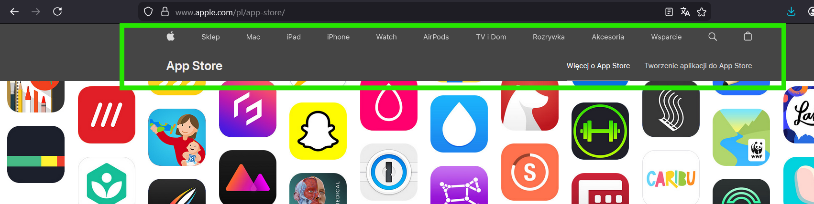
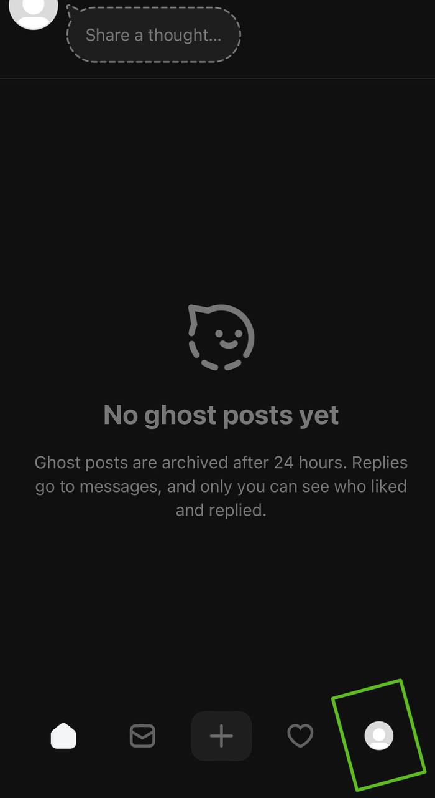

4. Spójność i standardy
EN: Consistency and standards. Users should not have to wonder whether different words, situations, or actions mean the same thing. Follow platform and industry conventions.
PL: Użytkownicy nie powinni zastanawiać się, czy różne słowa, sytuacje lub działania oznaczają to samo. Należy trzymać się konwencji danej platformy i standardów rynkowych.
Przykład 1: Strona Internetowa (Desktop)

Uzasadnienie: Umieszczenie menu na górze i logo po lewej stronie to standard, dzięki któremu użytkownik od razu wie, jak nawigować po stronie.
Przykład 2: Aplikacja Mobilna

Uzasadnienie: Ikona profilu umieszczona w stałym miejscu na pasku dolnym (tab bar) pozwala użytkownikowi szybko zlokalizować swoje ustawienia.